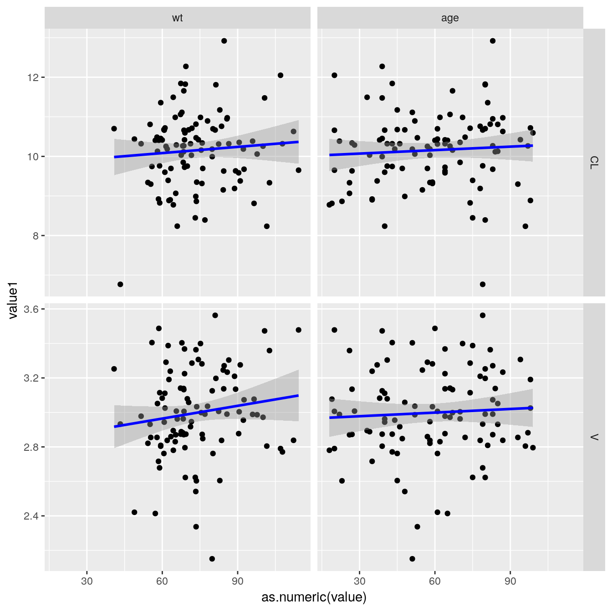
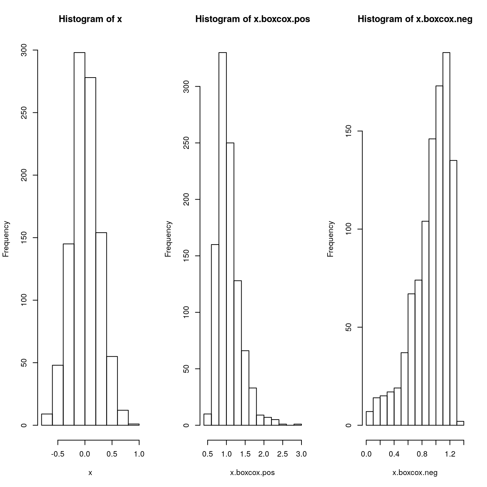

qpToolkit General Purpose Functions
Klaas Prins
2019-03-01
qpToolkitGeneralPurposeFunctions.RmdKick off by creating some play data with PK and PD data.
##
## extrc.> extract.number("c76")
## [1] 76
##
## extrc.> extract.number("c76c7")
## [1] 76
##
## extrc.> extract.number("BLOQ = 0.144")
## [1] 0.144##
## extrc.> extract.character(x="df12Lee31df")
## [1] "df" "Lee" "df"
##
## extrc.> extract.character(x="df1231df", TRUE)
## [1] "dfdf"##
## cut3> pkpdData = example.pkpdData()
##
## cut3> sunique(cut3(pkpdData$wt, g=10, levels.mean=TRUE))
## [1] 57.867 67.250 71.389 73.429 76.077 78.471 80.455 82.100 86.462 94.917
##
## cut3> lunique(cut3(pkpdData$wt, g=10, levels.mean=TRUE))
## [1] 10##
## geomen> set.seed(1234)
##
## geomen> x = rlnorm(1000)
##
## geomen> mean(x)
## [1] 1.606631
##
## geomen> geomean(x)
## [1] 0.9737534##
## expnd.> input.df = data.frame(A=1:2,B=2:3,C=4:5)
##
## expnd.> input.df
## A B C
## 1 1 2 4
## 2 2 3 5
##
## expnd.> expand.data(input.df, values = c(1,3,7), "Klaas")
## A B C Klaas
## 1 1 2 4 1
## 2 2 3 5 1
## 1.1 1 2 4 3
## 2.1 2 3 5 3
## 1.2 1 2 4 7
## 2.2 2 3 5 7## Warning in example("geomean.smedian.hilow"): no help found for
## 'geomean.smedian.hilow'##
## frmtt.> formatted.signif(c(5,4.99, 4.99999,5.0000001,5001),4)
## [1] "5.000" "4.990" "5.000" "5.000" "5001"
##
## frmtt.> numvec = c(5,4.99, 4.99999,5.0000001,5001, 0.00005,101,39.9)
##
## frmtt.> print(
## frmtt.+ xtable(
## frmtt.+ data.frame(original=numvec
## frmtt.+ ,latex.TRUE= formatted.signif(numvec,3, TRUE,FALSE)
## frmtt.+ ,align.TRUE= formatted.signif(numvec,3, FALSE,TRUE)
## frmtt.+ ,all.TRUE = formatted.signif(numvec,3, TRUE,TRUE)
## frmtt.+ )
## frmtt.+ )
## frmtt.+ , booktabs=TRUE
## frmtt.+ , sanitize.text.function = identity
## frmtt.+ )
## % latex table generated in R 3.5.1 by xtable 1.8-3 package
## % Fri Mar 1 06:00:02 2019
## \begin{table}[ht]
## \centering
## \begin{tabular}{rrlll}
## \toprule
## & original & latex.TRUE & align.TRUE & all.TRUE \\
## \midrule
## 1 & 5.00 & 5.00 & $\phantom{00}$5.00 & $\phantom{00}$5.00 \\
## 2 & 4.99 & 4.99 & $\phantom{00}$4.99 & $\phantom{00}$4.99 \\
## 3 & 5.00 & 5.00 & $\phantom{00}$5.00 & $\phantom{00}$5.00 \\
## 4 & 5.00 & 5.00 & $\phantom{00}$5.00 & $\phantom{00}$5.00 \\
## 5 & 5001.00 & 5.00$\cdot$10$^{3}$ & $\phantom{00}$5.00e+03 & $\phantom{00}$5.00$\cdot$10$^{3}$ \\
## 6 & 0.00 & 5.00$\cdot$10$^{-5}$ & $\phantom{00}$5.00e-05 & $\phantom{00}$5.00$\cdot$10$^{-5}$ \\
## 7 & 101.00 & 101 & $\phantom{}$101 & $\phantom{}$101 \\
## 8 & 39.90 & 39.9 & $\phantom{0}$39.9 & $\phantom{0}$39.9 \\
## \bottomrule
## \end{tabular}
## \end{table}
##
## frmtt.> # now take this to a LaTeX compiler!
## frmtt.>
## frmtt.>
## frmtt.>##
## fxs> fxs(c(0,1,34, 50000), pattern=" ")
## [1] " 0" " 1" " 34" "50000"
##
## fxs> fxs(c(0,1,34, 50000), "000000")
## [1] "000000" "000001" "000034" "050000"##
## insrt.> pkpdData = example.pkpdData()
##
## insrt.> tmp = pkpdData[1:3,]
##
## insrt.> tmp
## id dose age wt ht bmi sex race endpoint trt time type cl
## 1 1 0 38 69 197 17.8 F Black effect Placebo 0 PK 3.080465
## 1.1 1 0 38 69 197 17.8 F Black effect Placebo 1 PK 3.080465
## 1.2 1 0 38 69 197 17.8 F Black effect Placebo 2 PK 3.080465
## v keo value
## 1 16.17536 0.04175091 0.05
## 1.1 16.17536 0.04175091 0.05
## 1.2 16.17536 0.04175091 0.05
##
## insrt.> insert.blank.line(tmp, 2)
## id dose age wt ht bmi sex race endpoint trt time type
## 1 1 0 38 69 197 17.8 F Black effect Placebo 0 PK
## 1.1 1 0 38 69 197 17.8 F Black effect Placebo 1 PK
## 11 ~ ~ ~ ~ ~ ~ ~ ~ ~ ~ ~ ~
## 1.2 1 0 38 69 197 17.8 F Black effect Placebo 2 PK
## cl v keo value
## 1 3.08046523227664 16.1753553247532 0.0417509087217943 0.05
## 1.1 3.08046523227664 16.1753553247532 0.0417509087217943 0.05
## 11 ~ ~ ~ ~
## 1.2 3.08046523227664 16.1753553247532 0.0417509087217943 0.05##
## isNmrc> isNumeric(12)
## [1] TRUE
##
## isNmrc> isNumeric("x")
## [1] FALSE
##
## isNmrc> isNumeric(c(1,2,3,"b",5,6))
## [1] TRUE TRUE TRUE FALSE TRUE TRUE##
## asNmrc> as.numeric(c("3.45","1000","1e6","<BLOQ","NA","<0.100"))## Warning in eval(ei, envir): NAs introduced by coercion## [1] 3.45e+00 1.00e+03 1.00e+06 NA NA NA
##
## asNmrc> asNumeric(c("3.45","1000","1e6","<BLOQ","NA","<0.100"))## Warning in asNumeric(c("3.45", "1000", "1e6", "<BLOQ", "NA", "<0.100")):
## NAs introduced by coercion## [1] 3.45e+00 1.00e+03 1.00e+06 NA NA NA
##
## asNmrc> asNumeric(c("3.45","1000","1e6","<BLOQ","NA","<0.100"), missing.code = c("<BLOQ","NA","<0.100"))
## [1] 3.45e+00 1.00e+03 1.00e+06 NA NA NA##
## locf> locf(c(NA,NA,1,NA,NA,2,NA,NA,NA,NA,3))
## [1] 1 1 1 1 1 2 2 2 2 2 3
##
## locf> # Note that initial missing values take next value (1), so next value carried backward at beginning
## locf> # Example with "."
## locf> locf(c(".",".",1,".",".",2,".",".",".",".",3), na=".")
## [1] "1" "1" "1" "1" "1" "2" "2" "2" "2" "2" "3"
##
## locf> # Note, if you have text in the vector, it is all converted to text. This is by design so we can use different types.
## locf> # Examples with factors
## locf> fac=as.factor(c(".",".","A",".",".","B",".",".",".",".","C"))
##
## locf> locf(fac,na=".")
## [1] A A A A A B B B B B C
## Levels: A B C
##
## locf> fac=as.factor(c(NA,NA,"A",NA,NA,"B",NA,NA,NA,NA,"C"))
##
## locf> locf(fac,na=NA)
## [1] A A A A A B B B B B C
## Levels: A B C##
## mss.cl> my.df.1 = data.frame(a=1:3,b=4:6,c=7:9)
##
## mss.cl> my.df.2 = data.frame(a=1:3,b=4:6)
##
## mss.cl> miss.col(my.df.1,my.df.2)
## [1] "c"
##
## mss.cl> #"c"
## mss.cl> miss.col(my.df.2,my.df.1)
## character(0)
##
## mss.cl> #character(0)
## mss.cl>
## mss.cl>
## mss.cl>## Warning in example("orderedNumeric"): no help found for 'orderedNumeric'##
## rrdr.n> testData = expand.grid(start=1,middle=LETTERS[1:3], end=c("K","L"))
##
## rrdr.n> reorder.names(testData, who = "start", after = "end")
## middle end start
## 1 A K 1
## 2 B K 1
## 3 C K 1
## 4 A L 1
## 5 B L 1
## 6 C L 1## Warning in example("repeath.nth"): no help found for 'repeath.nth'##
## smpl..> my.ids = rep(1:5,each=3)
##
## smpl..> my.ids
## [1] 1 1 1 2 2 2 3 3 3 4 4 4 5 5 5
##
## smpl..> set.seed(123456)
##
## smpl..> sample.by.id(my.ids, samples=rgamma(1000,1))
## [1] 0.9810881 0.9810881 0.9810881 0.5918479 0.5918479 0.5918479 0.5658642
## [8] 0.5658642 0.5658642 0.5009604 0.5009604 0.5009604 3.6225063 3.6225063
## [15] 3.6225063
##
## smpl..> my.ids = rep(1:5,times=3)
##
## smpl..> my.ids
## [1] 1 2 3 4 5 1 2 3 4 5 1 2 3 4 5
##
## smpl..> sample.by.id(my.ids, samples=rgamma(1000,1))
## [1] 0.60121803 1.14291566 0.08196904 0.19867143 1.16778467 0.60121803
## [7] 1.14291566 0.08196904 0.19867143 1.16778467 0.60121803 1.14291566
## [13] 0.08196904 0.19867143 1.16778467
##
## smpl..> #one unique value per id
## smpl..> sample.by.id(unique(my.ids), samples=rgamma(1000,1))
## [1] 1.3269885 0.8346449 1.0795884 2.3052819 1.6709488
##
## smpl..> tapply(sample.by.id(my.ids, samples = rgamma(1000,1)),my.ids, unique)
## 1 2 3 4 5
## 0.5174391 0.2233351 1.5833289 0.3822135 0.0116271##
## rnrm..> sam = rnorm.by.id(pkpdData$id, mean = 0, sd = 1)
##
## rnrm..> tapply(sam,pkpdData$id, unique)
## 1 2 3 4 5
## 0.230658927 -1.544960724 0.909072953 -1.752311114 -1.479183758
## 6 7 8 9 10
## 2.367092104 0.145988413 -0.297807478 0.769563800 -0.369884647
## 11 12 13 14 15
## 0.725522888 -0.194899945 -0.369349546 1.322726065 -0.563233946
## 16 17 18 19 20
## 2.183508368 0.390014043 2.044048228 -1.180644683 -2.129990504
## 21 22 23 24 25
## -1.435763802 -0.131669586 2.087576592 -0.461854329 1.473495587
## 26 27 28 29 30
## 0.683551821 -0.521518446 -0.894733400 0.752101156 0.160387616
## 31 32 33 34 35
## 1.712559376 1.089642156 1.804591219 -2.123576645 1.907616298
## 36 37 38 39 40
## 0.271911557 0.277589662 -0.353323595 -0.272888694 -1.895286872
## 41 42 43 44 45
## -0.723705573 -0.105431437 -0.253569020 -0.429120194 0.318408055
## 46 47 48 49 50
## -0.556313699 0.681210942 -0.161147213 -0.697367982 -0.137691579
## 51 52 53 54 55
## 1.098610034 0.648026200 -0.804697386 2.340845648 -0.955130460
## 56 57 58 59 60
## 0.238656761 -2.450813678 0.121321236 -2.483687890 -0.515832279
## 61 62 63 64 65
## 2.912983604 -0.192633598 1.087323281 -0.785828428 0.623944752
## 66 67 68 69 70
## 0.109745594 -0.417683012 -1.118685172 0.702426028 0.682821187
## 71 72 73 74 75
## -1.048945207 0.237049973 -0.909238486 -0.926818811 -0.346760509
## 76 77 78 79 80
## 0.290805824 -0.691603665 -0.908821114 -2.135752683 0.898685966
## 81 82 83 84 85
## 0.741332538 -0.697598418 0.058995323 -1.117942129 -2.153397857
## 86 87 88 89 90
## -0.004490926 0.312111999 1.271032950 1.416745367 0.705376734
## 91 92 93 94 95
## 1.263180782 -1.788593189 -0.907172267 -0.390791912 0.222278192
## 96 97 98 99 100
## -0.014428719 -0.498670562 -0.777438970 -0.140253281 -0.427152424
## 101 102 103 104 105
## -0.577832125 -0.603835051 0.290971358 0.357382022 -0.864030858
## 106 107 108 109 110
## -0.794165355 -0.794796689 -0.073028264 1.337715058 -0.219185610
## 111 112 113 114 115
## 0.662807942 0.267163250 -1.992835533 -1.271476999 -0.933952821
## 116 117 118 119 120
## 0.663575738 1.489669029 1.177958237 -1.171854036 -0.295026113
## 121 122 123 124 125
## 0.710411686 0.634081706 -0.125045123 0.436202417 -0.349790677
## 126 127 128
## 0.157629022 1.589589146 0.114392757##
## shffl.> test = list(A=list(a=1,b=2,c=3), B = list(a=2,b=1,c=0))
##
## shffl.> shuffle.list(test)
## $a
## $a$A
## [1] 1
##
## $a$B
## [1] 2
##
##
## $b
## $b$A
## [1] 2
##
## $b$B
## [1] 1
##
##
## $c
## $c$A
## [1] 3
##
## $c$B
## [1] 0##
## swap> my.vect = c(1,2,2,2,4,4,4,3,3,3,3)
##
## swap> swap(my.vect,c(1,2,3,4),c(11,22,33,44))
## [1] 11 22 22 22 44 44 44 33 33 33 33##
## tblt.s> my.df = data.frame( analyte.1=Cs(1,2,3,4,BLOQ,5,6,NS,7,M),
## tblt.s+ analyte.2=Cs(1,2,BLOQ,M,3,BLOQ,5,6,NS,7))
##
## tblt.s> tabulate.samples(data=my.df, analyte="analyte.1")
## BLOQ NS M Numeric.Values All
## 1 1 1 7 10
##
## tblt.s> tabulate.samples(data=my.df, analyte="analyte.2")
## BLOQ NS M Numeric.Values All
## 2 1 1 6 10##
## trmSpc> trimSpace(" Hello ")
## [1] "Hello"
##
## trmSpc> trimSpace(" Hello there ")
## [1] "Hello there"functions with graphs
##
## lgt.nv> myVector = runif(n = 1000, min=0.001,max = 0.999)
##
## lgt.nv> myVector.logit = logit(myVector)
##
## lgt.nv> par(mfrow = c(1,3))
##
## lgt.nv> hist(myVector)##
## lgt.nv> hist(myVector.logit)##
## lgt.nv> hist(logit.inv(myVector.logit))
##
## untDns> standardNormal = unitDensity(qnorm(seq(0.0001,0.9999,length=1000),0,1))
##
## untDns> plot(standardNormal$x, standardNormal$y, col = qp.blue, type = 'l')##
## untHst> set.seed(1234567)
##
## untHst> myvals = rnorm(10000,50,5)
##
## untHst> unitHistogram(myvals, xlab = "My Values", cex.lab = 1.25)##
## rgenps> genPois.samples = sapply(seq(0.3,-1.1,-0.2), function (DISP)
## rgenps+ {
## rgenps+ rgenpois(n=10000, lambda=22, disp = DISP)
## rgenps+ })
##
## rgenps> # plot across dispersion
## rgenps> plot(range(genPois.samples), c(0,.25), type = "n", xlim = c(0,100), ylab = "Frequency")
##
## rgenps> for(i in 1 : ncol(genPois.samples)){
## rgenps+ gpDen = density(genPois.samples[,i], bw=1)
## rgenps+ lines(gpDen)
## rgenps+ text(mean(genPois.samples[,i])
## rgenps+ , max(gpDen$y)+0.015
## rgenps+ , round(mean(genPois.samples[,i]),1)
## rgenps+ , cex = 0.5
## rgenps+ )
## rgenps+ }
##
## rgenps> lines(density(rpois(10000, 11),bw=1), col = qp.green, lwd = 3)
##
## rgenps> text(3, 0.03, round(mean(rpois(10000, 11)), 1), col = qp.green)##
## boxcxf> x = rnorm(1000, mean = 0, sd = 0.25)
##
## boxcxf> x.boxcox.pos = boxcoxf(0.5,x)
##
## boxcxf> x.boxcox.neg = boxcoxf(-3.5,x)
##
## boxcxf> par(mfrow=c(1,3))
##
## boxcxf> hist(x)##
## boxcxf> hist(x.boxcox.pos)##
## boxcxf> hist(x.boxcox.neg)
##
## dblStc> set.seed(1234)
##
## dblStc> myDF = data.frame(id=1:100)
##
## dblStc> myDF$wt = with(myDF, signif(rnorm.by.id(id, 76,15)))
##
## dblStc> myDF$age = with(myDF, signif(sample.by.id(id, samples = seq(18,99))))
##
## dblStc> myDF$sex = with(myDF, sample.by.id(id, samples = c("F","M")))
##
## dblStc> myDF$CL = with(myDF, signif(rnorm.by.id(id, 10,1)))
##
## dblStc> myDF$V = with(myDF, signif(rnorm.by.id(id, 3,0.25)))
##
## dblStc> stacked.df = doubleStack(myDF, vars1 = c("CL","V"), vars2 = c("wt","age","sex"))
##
## dblStc> head(myDF)
## id wt age sex CL V
## 1 1 57.8940 72 F 10.4852 2.85501
## 2 2 80.1614 61 M 10.6968 2.76168
## 3 3 92.2666 44 M 10.1855 2.95514
## 4 4 40.8145 80 F 10.7007 3.25245
## 5 5 82.4369 61 M 10.3117 3.00591
## 6 6 83.5908 78 F 10.7605 2.83774
##
## dblStc> head(stacked.df)
## id variable1 value1 variable value
## 1 1 CL 10.4852 wt 57.894
## 2 2 CL 10.6968 wt 80.1614
## 3 3 CL 10.1855 wt 92.2666
## 4 4 CL 10.7007 wt 40.8145
## 5 5 CL 10.3117 wt 82.4369
## 6 6 CL 10.7605 wt 83.5908
##
## dblStc> library(ggplot2)
##
## dblStc> ggplot(subset(stacked.df, variable != "sex"), aes(x=as.numeric(value), y = value1)) +
## dblStc+ geom_point() +
## dblStc+ stat_smooth(method="lm", col = lin.fit.col) +
## dblStc+ facet_grid(variable1 ~ variable,scales="free_y")
functions with graphs
##
## lgt.nv> myVector = runif(n = 1000, min=0.001,max = 0.999)
##
## lgt.nv> myVector.logit = logit(myVector)
##
## lgt.nv> par(mfrow = c(1,3))
##
## lgt.nv> hist(myVector)##
## lgt.nv> hist(myVector.logit)##
## lgt.nv> hist(logit.inv(myVector.logit))
##
## untDns> standardNormal = unitDensity(qnorm(seq(0.0001,0.9999,length=1000),0,1))
##
## untDns> plot(standardNormal$x, standardNormal$y, col = qp.blue, type = 'l')##
## untHst> set.seed(1234567)
##
## untHst> myvals = rnorm(10000,50,5)
##
## untHst> unitHistogram(myvals, xlab = "My Values", cex.lab = 1.25)##
## rgenps> genPois.samples = sapply(seq(0.3,-1.1,-0.2), function (DISP)
## rgenps+ {
## rgenps+ rgenpois(n=10000, lambda=22, disp = DISP)
## rgenps+ })
##
## rgenps> # plot across dispersion
## rgenps> plot(range(genPois.samples), c(0,.25), type = "n", xlim = c(0,100), ylab = "Frequency")
##
## rgenps> for(i in 1 : ncol(genPois.samples)){
## rgenps+ gpDen = density(genPois.samples[,i], bw=1)
## rgenps+ lines(gpDen)
## rgenps+ text(mean(genPois.samples[,i])
## rgenps+ , max(gpDen$y)+0.015
## rgenps+ , round(mean(genPois.samples[,i]),1)
## rgenps+ , cex = 0.5
## rgenps+ )
## rgenps+ }
##
## rgenps> lines(density(rpois(10000, 11),bw=1), col = qp.green, lwd = 3)
##
## rgenps> text(3, 0.03, round(mean(rpois(10000, 11)), 1), col = qp.green)##
## boxcxf> x = rnorm(1000, mean = 0, sd = 0.25)
##
## boxcxf> x.boxcox.pos = boxcoxf(0.5,x)
##
## boxcxf> x.boxcox.neg = boxcoxf(-3.5,x)
##
## boxcxf> par(mfrow=c(1,3))
##
## boxcxf> hist(x)##
## boxcxf> hist(x.boxcox.pos)##
## boxcxf> hist(x.boxcox.neg)
##
## dblStc> set.seed(1234)
##
## dblStc> myDF = data.frame(id=1:100)
##
## dblStc> myDF$wt = with(myDF, signif(rnorm.by.id(id, 76,15)))
##
## dblStc> myDF$age = with(myDF, signif(sample.by.id(id, samples = seq(18,99))))
##
## dblStc> myDF$sex = with(myDF, sample.by.id(id, samples = c("F","M")))
##
## dblStc> myDF$CL = with(myDF, signif(rnorm.by.id(id, 10,1)))
##
## dblStc> myDF$V = with(myDF, signif(rnorm.by.id(id, 3,0.25)))
##
## dblStc> stacked.df = doubleStack(myDF, vars1 = c("CL","V"), vars2 = c("wt","age","sex"))
##
## dblStc> head(myDF)
## id wt age sex CL V
## 1 1 57.8940 72 F 10.4852 2.85501
## 2 2 80.1614 61 M 10.6968 2.76168
## 3 3 92.2666 44 M 10.1855 2.95514
## 4 4 40.8145 80 F 10.7007 3.25245
## 5 5 82.4369 61 M 10.3117 3.00591
## 6 6 83.5908 78 F 10.7605 2.83774
##
## dblStc> head(stacked.df)
## id variable1 value1 variable value
## 1 1 CL 10.4852 wt 57.894
## 2 2 CL 10.6968 wt 80.1614
## 3 3 CL 10.1855 wt 92.2666
## 4 4 CL 10.7007 wt 40.8145
## 5 5 CL 10.3117 wt 82.4369
## 6 6 CL 10.7605 wt 83.5908
##
## dblStc> library(ggplot2)
##
## dblStc> ggplot(subset(stacked.df, variable != "sex"), aes(x=as.numeric(value), y = value1)) +
## dblStc+ geom_point() +
## dblStc+ stat_smooth(method="lm", col = lin.fit.col) +
## dblStc+ facet_grid(variable1 ~ variable,scales="free_y")